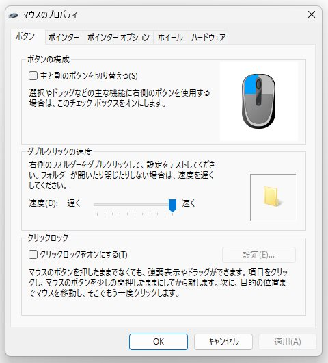
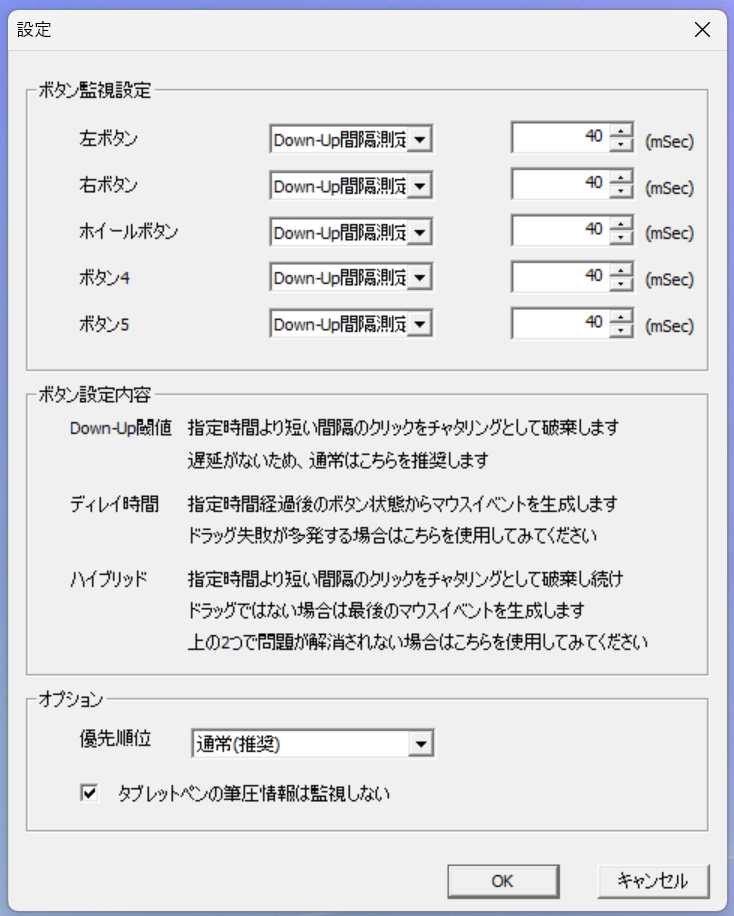

マウスのチャタリングを無理やり直した
yyyy
yyyy
ひさびさにブログ更新するかと思ったけど書くことなかったのでめちゃ薄い内容。
「内容がないよ～」
はじめに
週1ブログ更新を決めたけど1か月さぼっていたゆいです。
最近、メインPCで使っているマウスが死にかけです…
マウスホイールが誤作動したり、左クリックが10%くらいの確率でチャタリングしたりします。ホイール誤作動は分解してパーツクリーナー吹きかけたらなんか知らないけど直りましたが、チャタリングは直らなそう…
なんとかしたかったので何とかします。
※今みたら売り切れてますねこのマウス。だいぶ古い商品だからそろそろ在庫尽きた??
試したこと
試したけどダメだったことまとめ
- マウスの分解清掃
- スイッチ部分をエアダスターで吹く
- ドライバの再インストール
- USBケーブル抜き差し
けっこう使いやすくて気に入ってるし、買い換えるのめんどくさいのでもう少し延命させたいです。
ハードがダメならソフトでなんとかということで、一応の解決方法は存在しました。
解決方法：Windowsの設定をいじる
Windowsの設定で無理やり解決します。
大体の人が一回は見たことがある(?)ダブルクリックの速度の設定を変更します。
Windows11 22H2では下のような経路で設定画面が開けると思います。デバイスマネージャーとかコントロールパネルとかからたどってもいいかも。
設定 → Bluetoothとデバイス → マウス → マウスの追加設定

上の画面の中のダブルクリックの速度をMAXまで引きあげます。※MAXじゃなくてもいい?、チャタリングが消えるところまで上げてください。 これで多分なんとかなりました。
まとめ
Windowsの設定を変えてマウスのチャタリングを直しました。
チャタリング発生確率が10%→0.1%くらいになりました。満足。
が！根本的な解決になってはないのでそのうち買い換えかなぁ、悲しい。
次回のブログはお出かけ長編(?)記事になるかも…
☆2023-11-21追記☆ やっぱりだめだった😢
Windowsの設定でごまかして数日間使っていましたが、やっぱりダメそうです。どんどんひどくなっています。
他のソフトで対応しようかな、ということでテキトウに探したソフト、ChatteringCancelerを入れてみます。
ダウンロード
ダウンロードした後適当な場所に展開、x64またはx86(自分の環境に合わせてね)フォルダの中にあるChatteringCanceler.exeをダブルクリックなりで開き、画面右下にインジゲーターが出てくればOK!(折りたたまれた中に入っていると思われる)
設定画面はインジゲーターを右クリックのあと、設定を選択したら開けます。

ChatteringCancelerの設定画面
このソフト、なんかいい感じに設定できそうでいいですね。
細かい設定、どれがどうなるのかあんまりわからないですが、私の場合はなにもいじらなくてもチャタリングが消えました。
根本的な解決になってないのは変わってないので、今度また電子部品洗浄剤吹きかけてみようかな。
☆2024-05-11追記☆ Windows起動時にソフトを自動で起動する
Google検索から見に来てくれる人が多そうだったので、ChatteringCancelerをwindwos起動時に自動で起動する方法を簡単に書いておきます。毎回手動で起動するのめんどくさいですからね。
- アプリのショートカットを用意する
- ショートカットを次のフォルダーに入れる C:\Users\%username%\AppData\Roaming\Microsoft\Windows\Start Menu\Programs\Startup
- 再起動すればWindows起動時に常駐化してくれる